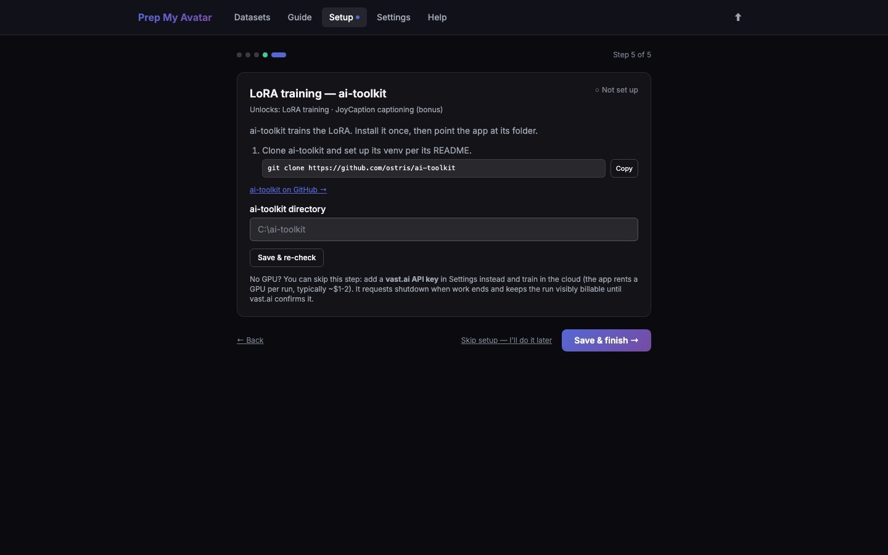

First run · 6 of 21
Step 6: Configure training
ai-toolkit trains a LoRA on your own computer. It is optional: you can export a training ZIP for another trainer or configure vast.ai for cloud training later.

Before you begin
Local training requires a compatible GPU and a separate ai-toolkit installation. Cloud training requires a vast.ai account, API key, account credit, and spending limits configured under Settings.
Do this
- On Step 5 of 5 — LoRA training — ai-toolkit, check whether the app found an installation.
- If it found one, select Use this ai-toolkit →.
- Otherwise, follow ai-toolkit on GitHub and clone it. On an Apple Silicon Mac, open Terminal in the cloned folder and run
./run_mac.zsh; wait for the experimental macOS setup to finish before returning to Prep My Avatar. - Select Choose folder… and choose the ai-toolkit folder containing
run.py. You may instead paste its full macOS path, such as/Users/you/Documents/GitHub/ai-toolkit. - Select Save & re-check. If the folder exists but its Python environment is missing, the page shows the exact macOS command to run.
- When the page says ai-toolkit is set up, select Save & finish →.
The browser cannot safely expose an absolute local directory through a normal upload field, so Choose folder… opens the Mac's native folder dialog through the local Prep My Avatar server. The picker is available only while accessing the app on the same Mac.
To skip training setup, leave the directory empty and finish. For cloud training later, add a vast.ai API key and safety limits in Settings → Training → Cloud training.
You are finished when
The page says ai-toolkit is set up, or you have deliberately skipped it, and Start this session appears. That page lists the same five tool groups and reports their current runtime state separately from Setup. Continue to Datasets when the tools you plan to use are ready.
The Start this session rows open task-specific instructions: commands and ports for local servers, or an explicit “nothing to start” explanation for tools that Prep My Avatar invokes itself. ai-toolkit is in the latter group: when training starts, Prep My Avatar runs it from the configured folder. Selecting Back to session status returns to the runtime checklist that opened the detail.